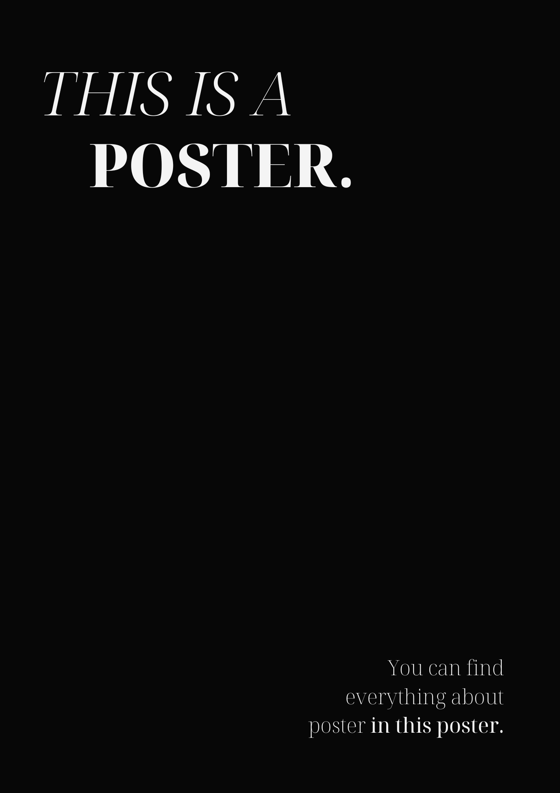
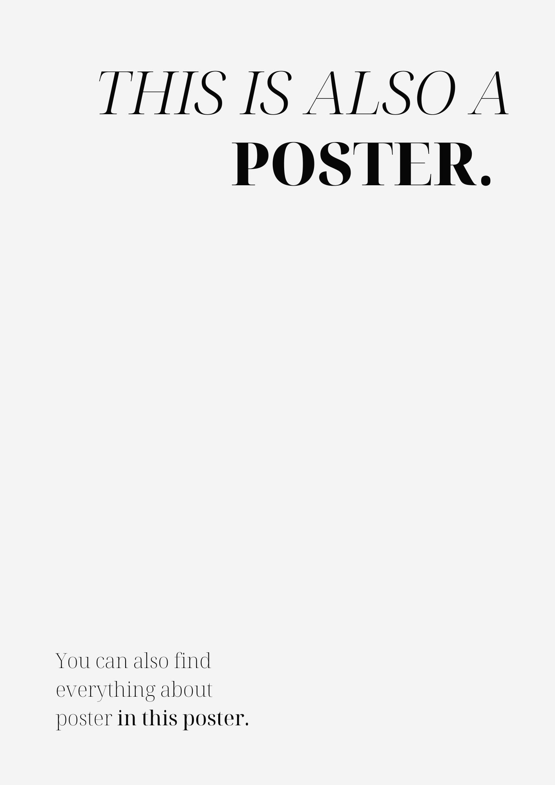
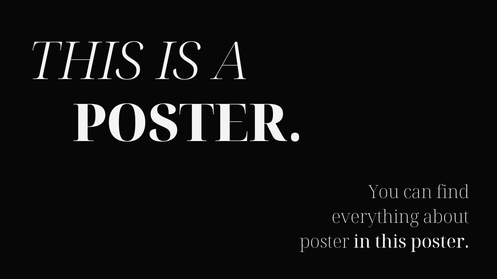
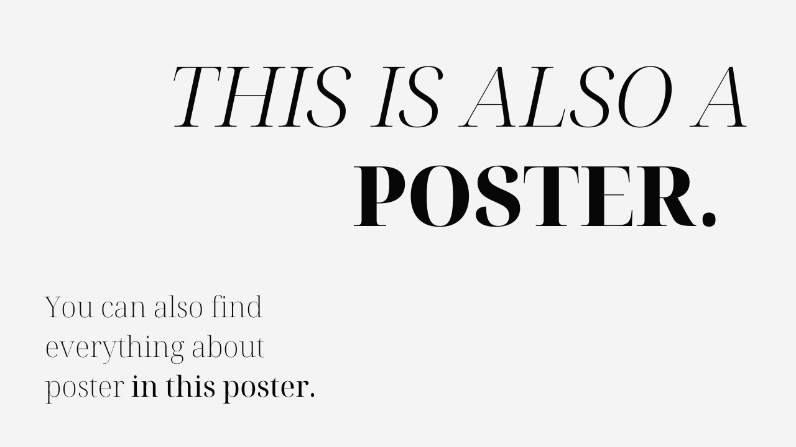
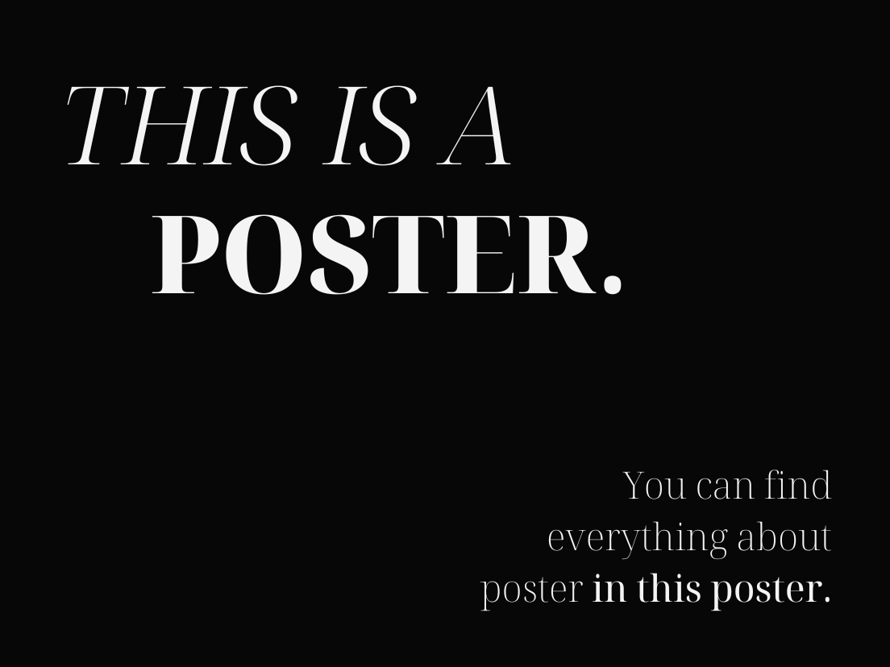

Project Overview
This is where you provide a concise overview of your project. Describe what it is, who it's for, and what problem it solves. Keep it engaging and accessible to give readers context before they dive into the detailed process or gallery.
The Problem
Text-Only Layout Example
Classes used: .workflow-step--text-only
This layout is for text-only content without images. It has a max-width of 68ch for optimal readability. Use this when you want to present narrative content, problem statements, or conclusions without accompanying visuals.
Full-Width Text-Only Layout Example
Classes used: .workflow-step--text-only + .workflow-step--full-width
This variant removes the 68ch width constraint, allowing text to extend to the full available width of the container. This is useful when you need to display wide content like tables, code blocks, or when you want the text to span the entire content area for visual emphasis. The full-width modifier overrides the default max-width constraint while maintaining all other text-only styling.
Side-by-Side Layout (Left)
Classes used: .workflow-step-row containing multiple .workflow-step--text-only
The workflow-step-row class creates a grid layout that displays multiple workflow steps side by side on desktop (48rem+) and stacks them vertically on mobile. Perfect for presenting related problems, solutions, or comparative content.
Side-by-Side Layout (Right)
Responsive behavior: Two columns on desktop, single column on mobile
Each workflow step within the row maintains its individual styling and modifiers. The row removes bottom margins and padding from child steps to prevent excessive spacing. Use this when you want to present multiple related points or comparisons in a balanced layout.

Photo with full height enabled
Photo Left, Text Right (Full Height)
Classes used: .workflow-step--left-photo + .workflow-step__photo--full-height
This layout places the photo on the left and text on the right. The --full-height
modifier allows the photo to display at its natural height without being constrained to match
the text box height. Perfect for tall images like portraits or A4 documents.

Small photo (1/3 width)
Small Photo Layout
Classes used: .workflow-step--left-photo + .workflow-step--photo-small
The small photo variant makes the photo take only 1/3 of the available width, giving more space
to text content. The grid adjusts automatically based on photo position: left-photo uses
1fr 2fr while right-photo uses 2fr 1fr to ensure the photo always
gets the smaller portion regardless of its position.
- Photo size: 1/3 of container width
- Text space: 2/3 of container width
- Best for: Text-heavy content with supporting images
Large Photo Layout
Classes used: .workflow-step--right-photo + .workflow-step--photo-large
The large photo variant makes the photo take 2/3 of the available width, emphasizing the visual.
The grid columns automatically adjust: left-photo uses 2fr 1fr while right-photo
uses 1fr 2fr to ensure the photo always gets the larger portion regardless of
whether it's positioned left or right.
- Photo size: 2/3 of container width
- Text space: 1/3 of container width
- Best for: Visual-focused content with minimal text

Large photo (2/3 width)
"This template demonstrates all workflow step layout options with clear examples of each CSS class and its intended use case."
— Template Documentation
Case Study Buttons
Use these buttons in the description section to link to prototypes, videos, or other external resources. The buttons have rounded corners and a simple hover effect that inverts the colors.
Usage:
.cs-btn- Button with rounded corners (16px border-radius).cs-btn-group- Container for multiple buttons- Hover effect: Background becomes accent color, text becomes background color
Design Process & Ideation
Text Left, Photo Right (Height Constrained)
Classes used: .workflow-step--right-photo (without --full-height)
This layout places text on the left and photo on the right. Without the --full-height
modifier, the photo is constrained to a max-height of 24rem and maintains its aspect ratio.
The photo will shrink proportionally if it's taller than the constraint.
- Default behavior: Photo height limited to 24rem
- Aspect ratio: Always maintained with
width: auto - Shadow: Applied to actual image, not container box
Photo with height constraint (24rem max)
Centered Layout with Multiple Images
Classes used: .workflow-step--photo-center + .workflow-step__photo--multiple

Image 1
Image 2
Image 3
This layout centers everything on the page with text above and below the images.
The --multiple modifier arranges images horizontally in a grid (auto-fit, min 14rem per image).
On mobile, images stack vertically. Perfect for showing multiple views or iterations side by side.

Iteration 1
Iteration 2
Iteration 3
Photo Left with Multiple Images
Classes used: .workflow-step--left-photo + .workflow-step__photo--multiple
This combines the left-photo layout with multiple images. Images are arranged in a grid (auto-fit, min 12rem per image) on the left side, with text content on the right. Great for showing design iterations, variations, or comparative views while maintaining the two-column layout structure.
Two Photos - Horizontal Layout
Classes used: .workflow-step--right-photo + .workflow-step__photo--two-horizontal
Perfect for before/after comparisons, side-by-side mockups, or any two related images that benefit from horizontal comparison. On desktop, photos display side by side. On mobile, they stack vertically for better viewing.
Before
After
Mobile Layout
Desktop Layout
Two Photos - Vertical Layout
Classes used: .workflow-step--left-photo + .workflow-step__photo--two-vertical
Ideal for showing sequential steps, progressive states, or when you want to maintain a vertical narrative flow. Photos remain stacked vertically even on desktop, with a centered, constrained width for optimal viewing. Great for tall images like mobile screens or documents.
Final Implementation
Single photo with height constraint
Photo Left, Text Right (Standard)
Classes used: .workflow-step--left-photo (without modifiers)
This is the standard left-photo layout without the --full-height modifier.
The photo is constrained to 24rem max-height and centered vertically with the text content.
The image maintains its aspect ratio and the shadow follows the actual image shape.
- Layout: Two-column grid (1fr 1fr) on desktop, single column on mobile
- Alignment: Photo and text are vertically centered
- Spacing: 12rem gap between columns on desktop
- Responsive: Collapses to single column below 768px
Summary of Available Classes
Layout Options:
.workflow-step--text-only- Text-only content, max-width 68ch.workflow-step--left-photo- Photo left, text right, two-column grid (1:1 ratio).workflow-step--right-photo- Text left, photo right, two-column grid (1:1 ratio).workflow-step--photo-center- Centered layout with text above/below photo
Photo Size Variants (for left-photo and right-photo):
.workflow-step--photo-small- Photo takes 1/3 width, text takes 2/3 (text-focused).workflow-step--photo-large- Photo takes 2/3 width, text takes 1/3 (visual-focused)- Default (no modifier) - Photo and text each take 1/2 width (balanced)
Container Options:
.workflow-step-row- Container for side-by-side workflow steps (2 columns on desktop, 1 on mobile)
Layout Modifiers:
.workflow-step--full-width- Remove width constraint from text-only layouts (use with.workflow-step--text-only)
Photo Modifiers:
.workflow-step__photo--full-height- Remove height constraint, show photo at natural size.workflow-step__photo--multiple- Display multiple images in a flexible grid layout (auto-fit).workflow-step__photo--two-horizontal- Display exactly 2 images side by side on desktop, stacked on mobile.workflow-step__photo--two-vertical- Display exactly 2 images stacked vertically, even on desktop